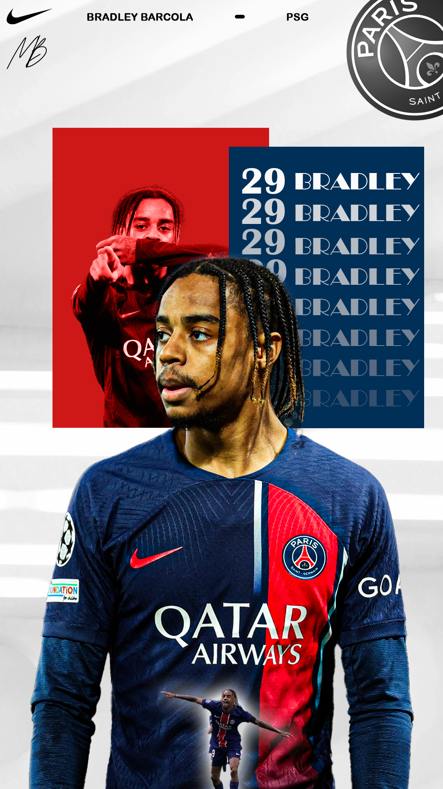
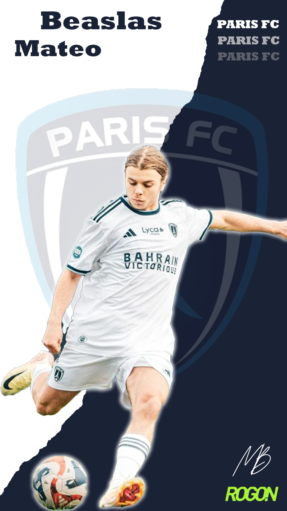
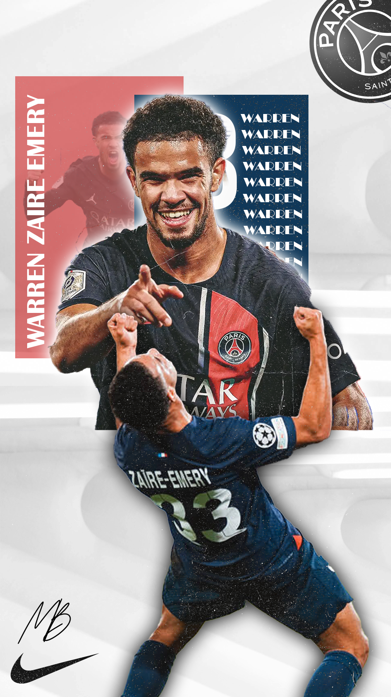

Affiches d'avant-match
En parallèle de mon BUT Métiers du Multimédia et de l’Internet (MMI), je conçois et réalise des affiches d’avant-match de football. Ce projet personnel s’inscrit à la fois dans une démarche créative et dans le développement de mes compétences en design graphique.
L’origine de ce projet repose sur la combinaison de deux passions : le football et la création visuelle, notamment à travers l’utilisation de Photoshop. En cherchant à associer ces deux centres d’intérêt, j’ai commencé à produire mes propres affiches afin de mettre en valeur les rencontres, les équipes et l’identité visuelle des matchs.
Au fil des réalisations, ce projet m’a permis d’explorer différents aspects du graphisme : la composition, la hiérarchisation de l’information, le choix des couleurs, la typographie et le traitement des images. Il m’a également aidé à développer ma créativité, mon sens de l’esthétique et ma rigueur dans le processus de création.
Aujourd’hui, la réalisation d’affiches d’avant-match représente pour moi un moyen d’allier passion et compétences professionnelles, tout en constituant un support concret pour valoriser mon travail et mon évolution dans le domaine du multimédia.








